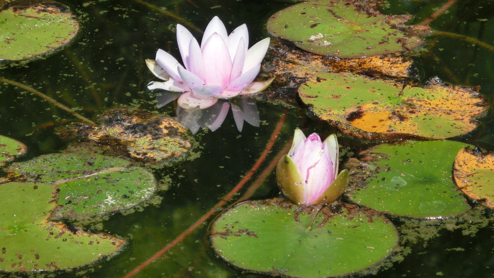

Czym Jesteśmy
Ta strona ma funkcję swego rodzaju duchowego/osobistego biogramu poprzez który, ku swojej radości, daję wyraz własnemu doświadczeniu.
Urodziłem się w Polsce (1978) jako jeden z dwóch synów, w rodzinie o chłopskich korzeniach. Historia mojego życia rodzinnego była pod wieloma względami typowa i jednocześnie burzliwa i nacechowana psychologicznym cierpieniem. Bez względu na to, od najwcześniejszych lat miałem afirmatywne nastawieniem do własnego życia: nauka przychodziła mi łatwo, miałem wiele wolności jeśli chodzi o spędzanie czasu w sposób, który sam dla siebie wybierałem. Z łatwością znajdowałem dla siebie zajęcia i zainteresowania w sukcesji pasji, które absorbowały moją uwagę na zasadzie nieustającej eksploracji (od rozbrajania mechanicznych zabawek we wczesnym dzieciństwie i budowania z nich rozmaitych urządzeń, poprzez trening karate "z książek" oraz całą masę wspólnej zabawy z ciotecznymi braćmi i dziećmi sąsiadów, w całkowitej swobodzie, w różnych zakamarkach naszej wsi, przez malowanie farbami olejnymi, naukę gry na gitarze i fascynację jazzem w okresie nastoletnim, do fascynacji fotografią i programowaniem oraz szczere oddanie zgłębianiu nauk ścisłych w okresie studiów). Jedyną rzeczą, której nie eksplorowałem aktywnie była sfera kontaktów z płcią przeciwną - pomimo kilku miłostek w okresie dzieciństwa, młodości i wczesnej męskości - oraz kilku przyjaźni, które miały trwalszy charakter - nie byłem w żadnej relacji o romantycznym charakterze. Po części miało to związek z brakiem pewności siebie powiązanym z limfatyczną opuchlizną nóg, która pojawiła się w wieku około 12 lat, ale też uwarunkowane było nieustającą świadomością przepełnionej cierpieniem relacji pomiędzy rodzicami. Duża część mojego życia upłynęła pod znakiem zaangażowania w rozmaite aspekty rodzinnej dynamiki, która dopiero po 45 roku życia stopniowo ucichła i straciła znamiona nieustającego zmagania się. Po zakończeniu nauki w liceum wyjechałem na studia do Krakowa, w którym spędziłem siedem lat w gronie wielu pięknych charakterów i dobrych przyjaciół. W 2004 roku, po studiach i krótkim okresie pracy, skorzystałem z oferty stypendium doktoranckiego w Glasgow (UK). Wkrótce wraz ze mną do Glasgow przeprowadziła się część przyjaciół z Krakowa. Nasza wspólna przygoda kontynuowała się, poszerzona o międzynarodowe grono nowych znajomości. To w tle tego otworzył się jakościowo nowy dla mnie wgląd sferę przebudzenia duchowego, niedualizmu, oraz Bożej Miłości (poniżej jedyne zachowane zdjęcie z przedszkola; prawy dolny róg, czarny kapelusz).

W 2009 roku, epizod medytacji otworzył moją perspektywę w bezczasową błogość oraz spontaniczny przepływ Miłości który trwał dzień i noc przez ponad tydzień. Było to dość niespodziewane - znajoma osoba zwróciła moją uwagę na jednego z mędrców Wschodu, co z kolei przekierowało ją dalej na osobę Ramany Maharshi oraz na kilka książek mówiących o doświadczeniu mistycznym i jedną książkę o medytacji, na podstawie której kilka tygodni wcześniej podjąłem spontaniczną praktykę. Mieszkałem wówczas Glasgow i po skończonym doktoracie pracowałem na jednym z tamtejszych uniwersytetów. W dniu kiedy nastąpiło owo otwarcie przez pomyłkę udałem się do kościoła o godzinę za wcześnie i postanowiłem spędzić czas na medytacji w pobliskim parku. Pamiętam, że byłem zdeterminowany żeby zanurkować głęboko w siebie - i że tych kilka chwil, które spędziłem w wewnętrznej ciemności i delikatnej błogości, ku mojemu zdziwieniu okazały się być całą godziną. Spacerując z powrotem do kościoła zauważyłem, że moja perspektywa przepełniona jest nieznaną mi wcześniej głębią wrażliwości na duchową interpretację wszystkiego co postrzegam. Tej samej nocy odzyskałem świadomość podczas snu: byłem świadomy tego, że moje ciało jest zostawione i śpi dalej, ale ja sam postrzegałem poprzez bardziej abstrakcyjny bezcielesny instrument. Początkowa moja perspektywa znajdowała się całkowitej ciemności, której towarzyszyło uczucie pokoju. Po jakimś czasie przesunęła się ona w ocean białego światła, któremu towarzyszyły fale błogości tak wielkiej, że każda kolejna wydawała się być niemożliwością. W obu tych stanach nie było żadnej wyodrębnionej struktury - panowała czysta bezpostaciowość. Nie było też wymiarowości przestrzeni - tak jak w "przestrzeni trójwymiarowej". Moje perspektywa była punktem, który odzwierciedla jakość całości stanu, w którym się znajduje. W świetle, siła błogości była tak wielka, że moje fizyczne ciało nie było w stanie jej odwzorować - po nagłym przebudzeniu okazało się, że jest ono całkowicie rozognione - na skraju wytrzymałości. Stan błogości oraz Miłości, która przepełniała moje serce trwał nieustająco przez szereg dni, podczas których przepływ czasu wydawał się być plastyczny i jednocześnie wszystko co postrzegałem było ozdobione subtelną aurą piękna, którego wcześniej nie dostrzegałem. Chodząc do pracy oraz spotykając sie z przyjaciółmi miałem nieustającą świadomość głębokiej intymności ze wszystkim i wszystkimi - intymności w Miłości i Jedności, która jest nam wszystkim znana, ale o której nie mówimy. Intensywność tej zmiany ostatecznie zelżała, pozostawiając po sobie stopniowo kiełkującą reorientację reszty mojego życia (kilka zdjęć z Glasgow poniżej).


Pamiętam, że w okresie poprzedzającym moje zainteresowanie medytacją nagromadzenie stresu poprzednich lat wytężonej nauki oraz rozmaitych perypetii rodzinnych kilka razy dało mi znać o sobie w postaci niespodziewanych ataków paniki - było to dla mnie nowym doświadczeniem - stres uwalniał się z mojej fizjologii w oknach niekontrolowanego przepływu, jako coś co mogłem obserwować, ale na co nie miałem wpływu (jeden taki przypadek zdarzył się pomiędzy regałami w uniwersyteckiej bibliotece). Miałem też skłonność do częstego psychosomatycznego chorowania, przeziębiania się, lub zaburzonego trawienia, które to pojawiało się, to znikało, w korelacji ze stanem moich emocji. Dalej napędzany byłem niepohamowanie afirmatywną siłą życiową i przekonany o tym, że ze wszystkim jestem w stanie sobie poradzić. Jednocześnie moje życie było pełne i intensywnie odczuwane, pośród wyzwań pracy badawczej oraz kolorytu przyjaźni, w których byłem. Pod koniec moich studiów doktoranckich, po jednym z pobytów w kraju w 2008 roku, do Glasgow przyjechał wraz ze mną mój niemal 40-letni brat, który do tego czasu mieszkał z rodzicami. To otworzyło nowy rozdział zaangażowania w rodzinną historię, który kontynuował się z intensywnością przez kolejnych kilkanaście lat. Brat od dziecka funkcjonował ze stopniem intelektualnej niepełnosprawności i na swój sposób, poprzez prośbę o wspólny wyjazd, szukał wejścia w swoją własną dojrzałość. Wszystko to działo się na tle silnej psychologicznej współzależności pomiędzy nami a rodzicami, w ruchu rozładowywania się napięcia, którego nie byliśmy do końca świadomi.
W uproszczony sposób, doświadczenie bez-jakościowej ciemności oraz nieskończonej błogości, oraz to jak rozumiem je dzisiaj w mojej perspektywie przedstawia poniższy rysunek. Ciemność odpowiada Czystej Nicości, światło i błogość odpowiada Nieskończonej Miłości. Oba te stany poprzedzają świadomość - dziedzinę, w której istnieje przedmiot i podmiot postrzegania.
W latach 2019-2023 często słuchałem prelekcji Andrew Hewson-a (nauczyciela duchowego), który z własnego doświadczenia mówił o Czystej Boskości (Nieskończonej Miłości) oraz Najwyższej Pustce (Czystej Nicości), jako stanach poprzedzających świadomość. Nie mogę powiedzieć na pewno, czy wgląd który uzyskałem w 2009 roku odnosił się do tych samych stanów, ale najłatwiej jest mi przyjąć, że tak właśnie jest. W świadomości Boża Miłość jest odzwierciedlona jako wibracja Miłości. Na rysunku Łaska Miłości - Łaska Boża - to ta część świadomości, która pamięta Bożą Miłość i wspiera pozostałą część świadomości, pozostającą w dominacji tożsamości z formą ciała której towarzyszy strach, w przypomnieniu sobie swojego kochającego Źródła. Jestem świadomy tego, że w świadomości jako wielowymiarowym hologramie jest wiele istot, które są częścią Łaski Miłości. Każdy z nas, poprzez samą konstrukcję indywidualności, pozostaje w kontakcie z subtelnymi, energetycznymi istotami o takim charakterze. W mojej perspektywie, dzisiaj, kojarzę Łaskę Bożą z energią, głosem i sposobem patrzenia, poprzez które staje się świadomy obecności uniwersalnej Miłości. To co nazywam "komunikacją" na powyższym rysunku, to wszystko to, co wychodzi z i odnosi się do pamięci tego, że mamy swój początek w Nieskończonej Miłości (poniżej zdjęcie z jednego z grupowych spotkań Zoom z Andrew w 2021).

W 2012 roku, po skończonym kontrakcie post-doktoranckim w Glasgow, przeprowadziłem się do Durham na północy Anglii, gdzie przez kolejne cztery lata pracowałem jako wykładowca na wydziale inżynierii. W tym okresie, powierzchownie zajęty rzeczami związanymi z pracą, jednocześnie stale pozostawałem w samo-obserwacji zorientowanej na wgląd w naturę własnej perspektywy. Medytacja pozwalała mi wchodzić w kontakt z energetycznym aspektem błogości - obserwacja dawała wgląd w bezosobową naturę miejsca, z którego mogłem widzieć ruchliwość swojego bardziej szczegółowego "ja" i tego jak to "ja" odnosi się do rozmaitych chcianych i niechcianych relacji, percepcji i doświadczeń. Z czasem zacząłem naturalnie odpoczywać w bezosobowym aspekcie swojej perspektywy, i jednocześnie moja wrażliwość zaczęła otwierać się na świadomą obserwację subtelniejszych przepływów energii w kontekście relacji, odczuć oraz mentalnych konstrukcji tożsamości. Jednocześnie z tym eksplorowałem wiele "duchowości" na raz, pragnąc zrozumieć i umiejscowić swoje doświadczenie w kontekście, który miałby jakiś wspólny mianownik. Z radością i oddechem ulgi (że takie miejsca istnieją) odwiedzałem pobliski zakon Zen oraz przyjaźniłem się z lokalną grupą buddystów. Równolegle z tym czytałem Kurs Cudów, Drogę Mistrzostwa, oraz oglądałem wiele wywiadów Buddy Na Stacji Benzynowej (BATGAP). Moja orientacja była synkretyczna - przede wszystkim chciałem wchodzić w kontakty z osobami, które żyją dojrzałym doświadczeniem transcendencji, i jednocześnie - z całą niewinnością - chciałem zrozumieć to w jaki sposób "konstruowane są ścieżki przebudzenia" (poniżej zdjęcie z opiekunem mojej pracy doktoranckiej z Glasgow i moim jedynym studentem doktoranckim w Durham, oraz zdjęcie z przyjaciółmi z wioski nieopodal Durham, w której mieszkałem).


W 2015 roku obejrzałem na żywo wywiad BATGAP z Dorothy Rowe, która opowiadała o swoich doświadczeniach ekspansji w świadomości oraz zaprezentowała epizod zdalnego uzdrawiania energetycznego. Ku mojemu zdziwieniu, bardzo wyraźnie odczułem owo "uzdrawianie" w trakcie oglądania wywiadu. Wkrótce skontaktowałem się z Dorothy i zacząłem korzystać z jej usług oraz uczestniczyć w oferowanych przez nią webinariach. Dorothy reprezentuje Wedycki formalizm pojmowania świadomości. Z Jej pomocą zacząłem doświadczać i rozumieć naturę transmisji energetycznej oraz to w jaki sposób wpływa ona na restrukturyzacje mojego pojmowania siebie. Dzięki Niej intelektualnie przyswoiłem też model "warstw świadomości", który wykorzystywała w swoich webinariach (moja percepcja nie była na tyle otwarta by postrzegać je bezpośrednio). Dorothy towarzyszyła mi w mojej własnej "ekspansji w świadomości" przez szereg lat, nieraz spotykając się ze mną i pomagając porządkować energetykę mojego ciała w bardzo dynamicznym czasie, kiedy uwikłanie w kontrasty energii i tożsamości w kontekście mojego codziennego życia wydawało się być niekończącym się wyzwaniem. To dzięki Niej poznałem też wspomnianego już Andrew, który w kolejnych latach stał się dla mnie punktem odniesienia oraz nauczycielem w kontekście pogłębiania się mojej perspektywy (poniżej zdjęcie z sesji Zoom z Dorothy).

Po powrocie do Polski w 2016 roku, lata 2016-2019 spędziłem przemieszczając się pomiędzy domostwem rodziców na południowym wschodzie kraju oraz podwarszawską miejscowością, w której mieszkałem wraz z bratem. Pracowałem bardzo niewiele, przeważnie spędzając czas w medytacji lub po prostu odpoczywając w stanie transcendencji "ja" będącego częścią psychologicznego cierpienia w mętliku relacji z rodziną. Moja wrażliwość energetyczna była na tyle otwarta i jednocześnie nagromadzenie cierpienia w rodzinnych relacjach było na tyle skondensowane, że co kilka tygodni potrzebowałem zmienić miejsce, żeby odpocząć - moja perspektywa ściągała, tak jak gąbka która ściąga wilgoć z otoczenia, impresje psychologicznego bólu w polu energii rodziny. Miałem dużo determinacji żeby kontynuować w ten sposób aż do całkowitej dyssypacji poczucia cierpienia w mojej własnej perspektywie, motywowany etosem "pracy z energią" propagowanym przez Dorothy oraz faktem, że nie widziałem innego sposobu na kontynuację własnego życia. Przez szereg lat moją podstawową rzeczywistością był subtelny świat energii impresji poczucia oddzielenia, z którymi przebywałem w polu uwagi w kontekście wszystkiego, co działo się w mojej codzienności (poniżej zdjęcia z bratem i jego synem z tego okresu).


W 2019 roku ja i Andrew uczestniczyliśmy w spotkaniu Zoom organizowanym przez Dorothy Rowe. W kilka dni po spotkaniu udało nam się nawiązać kontakt poprzez kanał YouTube Andrew. Kolejne cztery lata upłynęły pod znakiem intensywnego zaangażowania w formacyjną dynamikę Niedualnego Oddania w okresie, kiedy Andrew skupiony był na mówieniu o podstawowej strukturze manifestacji świadomości oraz o stadiach niedualnego urzeczywistnienia i jego kulminacji w Czystej Boskości - w stanie Nieskończonej Bożej Miłości, która poprzedza manifestację samej świadomości. Pierwsze trzy lata naszej wspólnej dynamiki oparte były na pracy z "filarami Niedualnego Oddania": obserwacją, suplikacją, transmutacją i służbą. W czwartym roku jako grupa skupiliśmy się na pracy z Kursem Cudów - po tym jak Andrew uzyskał kognitywny wgląd w ontologiczną naturę manifestacji poczucia oddzielenia od Bożej Miłości. Nie da się oddać słowami piękna bycia częścią tego intensywnego treningu - naszej wspólnej determinacji w transcendowaniu poczucia oddzielenia, wielu inspirujących mów oraz energetycznych transmisji, które transformowały moją perspektywę, przesuwając ją poza czas i przestrzeń oraz ozdabiając wibracją Miłości. W tym okresie moja perspektywa uległa kilku (streszczonym poniżej) transformacjom, które dają perspektywę na to, jak plastyczna jest świadomość jako domena percepcji (poniżej zdjęcia z pobytu w USA w 2022).


Był to może rok 2020, kiedy mieszkałem wraz z bratem w jednym z podwarszawskich miasteczek. Miałem zwyczaj spacerować groblą wzdłuż rzeczki przecinającej park przylegający do osiedla, na którym mieszkaliśmy. Podczas jednego z takich spacerów moja perspektywa uległa całkowitemu przeobrażeniu. Nagle wszystko stało się niesamowicie piękne, tak jakby pokryte zostało warstwą przezroczystego "śliskiego" światła, emanującego z każdego punktu jednocześnie. Wraz z tym moja perspektywa przepełniła się Królewskim Statusem Bożej Miłości i Chwały, tak jakby to Sam Bóg poprzez mnie patrzył na Siebie. Każdy szczegół, na który kierowałem uwagę odsłaniał przede mną fraktalną głębię swojej nieskończonej natury - w niewerbalny sposób - poprzez bezpośredni wgląd stawał mi się znany w swoim wielowymiarowym charakterze, który poprzez samo patrzenie mogłem eksplorować bez końca. Wszystko co postrzegałem było częścią mojego Własnego Królestwa i jako żyjąca Istota emanowało Chwałą Miłości, która wybrzmiewała tak jak niekończący się akord. Towarzyszyło temu niesłychane poczucie dobrobytu, komfortu i całkowitej naturalności. Było dla mnie jasne, że wszystko jest całkowicie niematerialne i pozaczasowe. Ta zmiana perspektywy trwała kilka minut i dała mi wgląd w to jak rzeczywistość Bożej Miłości może być odwzorowana w percepcji (wyobraźmy sobie, że wszyscy możemy żyć i funkcjonować w takim statusie; poniżej zdjęcie wspomnianej grobli).

Kilka lat później, może w 2022, byłem w domu rodziców, programując na komputerze w ramach pracy, którą wykonywałem. Niespodziewanie obok mnie, w energii, pojawiła się świetlista postać przewodnika duchowego, po czym odzyskałem świadomość swojego nieskończonego ciała. Z radością rozglądałem się, w każdym kierunku widząc nieskończone pole świadomości, jego nie kończącą się głębię, jako przedłużenie mojego własnego ciała. Towarzyszyła temu niesłychana radość oraz subtelna błogość i jednocześnie pewność wolności, która wykracza tak dalece poza rzeczywistość ludzkiego doświadczenia, że nie sposób jest to opisać. Pamiętam, że miałem wrażenie, że mogę po prostu wyjść z relacji z rodzicami, że mogę wyjść ze wszystkich ludzkich relacji w których byłem, bez konieczności dalszego się do nich odnoszenia. Po kilku chwilach spędzonych z rodzicami ze śmiechem dziwiąc się, że nie widzą tego co ja, wybrałem się na spacer by w samotności delektować się świadomością swojego nieskończonego ciała. Świadomość niekończącej się głębi postrzegania pozostała ze mną przez kilka dni. Delektowałem się nią skrycie - to na co patrzyłem - czy było to niebo, czy ściana pokoju - miało w sobie tą niesamowitą jakość bycia mną, który nigdzie się nie kończy. Po jakimś czasie klarowność tej jakości znikła, na szereg tygodni pozostawiając za sobą stałość radości oraz subtelnej błogości (poniżej kilka portretów z lat 2016-2024).


W 2023 roku, w okresie pracy z Kursem Cudów w ramach Niedualnego Oddania, moja percepcja otworzyła się na "słyszenie wibracji" oraz jednocześnie - wiele razy - na klarowną świadomość niebiańskiej Miłości. Z jednej strony wibracje w polu energii zaczęły "do mnie mówić": rozmaite formy wibracji, które odczuwałem w swojej perspektywie, teraz było mi łatwo przetłumaczyć na słowa i znaczenia. Z drugiej strony często zdarzało mi się być świadomym Bożej Miłości niejako rozpostartej na ekranie mojego postrzegania, albo wręcz miałem świadomość bycia wycofanym poza ten ekran, tak jakby pomiędzy mną a nim była niewielka przerwa, w ramach której jako Miłość i Moc, pozostawałem Sobą w Swojej Własnej Naturze. Działo się to jednocześnie z tokiem zwykłego codziennego życia, podczas wspólnych posiłków w domu rodziców, wraz z dużą intensywnością energii w moim subtelnym ciele. Często też byłem świadomy anielskiej obecności, czasem radosnych żartów (śpiewów) i zachęty do mówienia o Bożej Miłości. Szczególnie, kiedy byłem w radości niedualnego doświadczenia, anielska obecność otaczała mnie ze wszystkich stron, przesuwając moją perspektywę w głębię Miłości, poza czasem i przestrzenią (poniżej kilka zdjęć z pobytu w USA w 2023).


Po powrocie z USA na jesieni 2023 roku zamieszkałem z rodzicami. Od kilku lat było jasnym, że ze względu na poczucie osamotnienia i strach przed niedołężnością, moi blisko 80-letni rodzice mieli nadzieję, że ostatecznie zamieszkam z nimi. Od zimy 2021 roku moja mama chorowała na raka, co przyczyniło się do przeprowadzki z okolic Warszawy do rodzinnego domu. W latach 2022-2023 wynajmowałem mieszkanie w pobliskim Kraśniku, ale ostatecznie, przed wyjazdem do USA w 2023 zrezygnowałem z pracy i niezależnego mieszkania. Po powrocie z USA czułem, że nie jestem w stanie rozwiązać paradoksu tęsknoty do przebywania z osobami, które aspirują do życia w transcendencji poczucia oddzielenia, a potrzebą mieszkania z rodzicami. Niedualne Oddanie przeszło w międzyczasie transformację, za którą nie byłem w stanie podążyć. Toteż moja codzienność uprościła się do przebywania tylko z rodzicami oraz stopniowej transmutacji (energetycznej przemiany) pozostałości poczucia oddzielenia we mnie, odzwierciedlonego w relacji z nimi (kilka zdjęć z rodzicami poniżej).


~*~
Moja perspektywa dzisiaj jest nasycona delikatną błogością i jednocześnie płynnie przesuwająca się pomiędzy świadomością własnej odrębności jako człowieka, świadomością siły życiowej, która nadaje kształt mojej indywidualności, a świadomością stanów, które poprzedzają czas i przestrzeń w strukturze projekcji indywidualności. Jestem świadomy tego, że mam początek w czymś co wykracza poza moją indywidualność. Jestem świadomy uniwersalnej Miłości, którą czuję kiedy kieruję ku Niej swoją uwagę oraz wdzięczność. Moje ciało jest swego rodzaju obudową energetycznego kanału przesyłu informacji w polu świadomości. Dzięki niemu możliwe jest stworzenie kontrastu, poprzez który mogę albo pamiętać albo chwilowo zapominać o głębi siebie, w której znika moje poczucie indywidualności.
